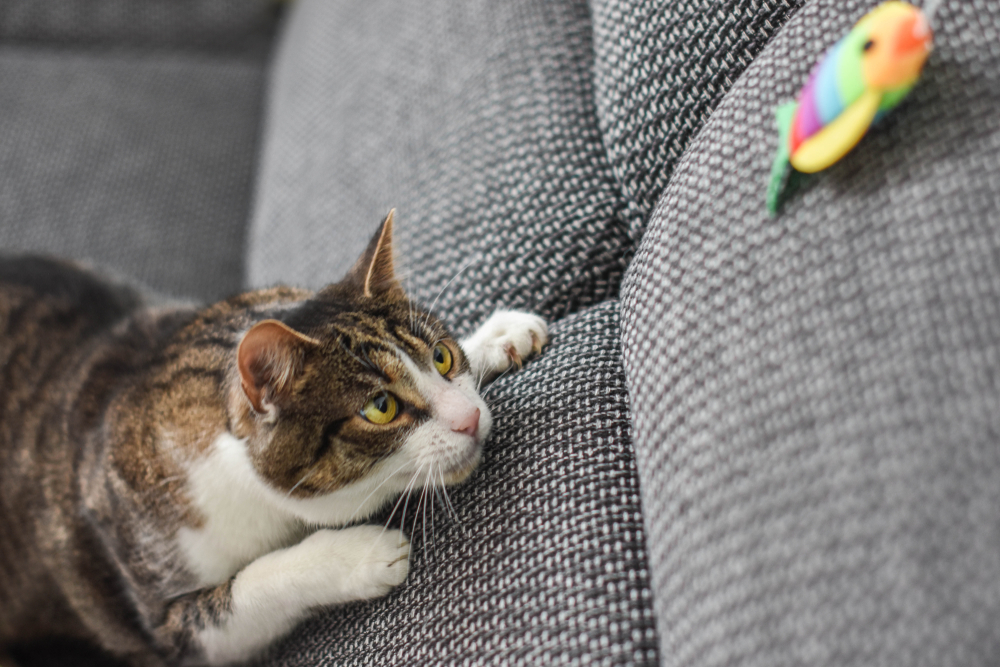

Cats are carnivorous animals that could be found in many households around the United States. There are many different breeds of cats, each with their own physical features. Cats are typically quick with fast reflexes, and are equipped with a strong sense of smell, sight, and hearing. They are also known for their ability to balance themselves in various situations, including while falling in air. Domesticated cats enjoy playing in many different ways, which include chasing and retrieving an object, like a toy mouse or a ball, and using what is known as a scratch post, which is made of material that cats can dig their claws into and not damage it as easily as furniture.
